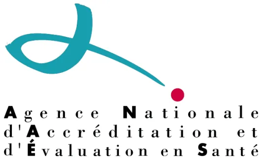

MARS 2001
Concernant l'IVG par méthode médicamenteuse, se référer aux recommandations de la HAS finalisées en décembre 2010, qui actualisent les recommandations ci-dessous.
Les parties des recommandations de mars 2001 modifiées suite aux recommandations de décembre 2010 apparaissent en rouge dans ce document.
Service des recommandations et références professionnelles
La médecine est marquée par l'accroissement constant des données publiées et le développement rapide de nouvelles techniques qui modifient constamment les stratégies de prise en charge préventive, diagnostique et thérapeutique des malades. Dès lors, il est très difficile pour les professionnels de santé d'assimiler toutes les informations découlant de la littérature scientifique, d'en faire la synthèse et de l'incorporer dans sa pratique quotidienne.
L'Agence Nationale d'Accréditation et d'Évaluation en Santé (ANAES), qui a succédé à l'Agence Nationale pour le Développement de l'Évaluation Médicale (ANDEM), a notamment pour mission de promouvoir la démarche d'évaluation dans le domaine des techniques et des stratégies de prise en charge des malades, en particulier en élaborant des recommandations professionnelles. À ce titre, elle contribue à mieux faire comprendre les mécanismes qui relient évaluation, amélioration de la qualité des soins et régularisation du système de santé.
Les recommandations professionnelles sont définies comme « des propositions développées méthodiquement pour aider le praticien et le patient à rechercher les soins les plus appropriés dans des circonstances cliniques données ». Leur objectif principal est de fournir aux professionnels de santé une synthèse du niveau de preuve scientifique des données actuelles de la science et de l'opinion d'experts sur un thème de pratique clinique, et d'être ainsi une aide à la décision en définissant ce qui est approprié, ce qui ne l'est pas ou ne l'est plus, et ce qui reste incertain ou controversé.
Les recommandations professionnelles contenues dans ce document ont été élaborées par un groupe multidisciplinaire de professionnels de santé, selon une méthodologie explicite, publiée par l'ANAES dans son document intitulé : « Les Recommandations pour la Pratique Clinique - Base méthodologique pour leur réalisation en France – 1999 ».
Le développement des recommandations professionnelles et leur mise en application doivent contribuer à une amélioration de la qualité des soins et à une meilleure utilisation des ressources. Loin d'avoir une démarche normative, l'ANAES souhaite, par cette démarche, répondre aux préoccupations de tout acteur de santé soucieux de fonder ses décisions cliniques sur les bases les plus rigoureuses et objectives possible.
Professeur Yves MATILLON
Directeur général de l'ANAES
Ces recommandations ont été faites à la demande de la Direction générale de la santé. Elles ont été établies dans le cadre d'un partenariat entre l'Agence Nationale d'Accréditation et d'Évaluation en Santé et :
La méthode utilisée est celle décrite dans le guide d'élaboration des « Recommandations pour la pratique clinique – Bases méthodologiques pour leur réalisation en France – 1999 » publié par l'ANAES.
L'ensemble du travail a été coordonné par M. le Pr Alain DUROCHER, responsable du service recommandations et références professionnelles
La recherche documentaire a été réalisée par Mme Christine DEVAUD, documentaliste, avec l'aide de Mme Sylvie LASCOLS, sous la responsabilité de Mme Hélène CORDIER.
Le secrétariat a été réalisé par Mlle Marie-Laure TURLET.
L'Agence Nationale d'Accréditation et d'Évaluation en Santé tient à remercier les membres du comité d'organisation, les membres du groupe de travail, les membres du groupe de lecture et les membres du Conseil scientifique dont les noms suivent.
Mme le Dr Chantal BELORGEY-BISMUT, AFSSAPS, Saint-Denis ;
Mme Chantal BIRMAN, sage-femme, Paris ;
M. le Dr Paul CESBRON, gynécologue-obstétricien, Creil ;
M. le Dr Abram COEN, psychiatre, Saint-Denis ;
M. le Dr Alain CORDESSE, gynécologue-obstétricien, Gonesse ;
Mme le Dr Catherine DENIS, AFSSAPS, Saint-Denis ;
M. le Dr Jean DOUBOVETZKY, médecin généraliste, Albi ;
Mme le Dr Laurence LUCAS-COUTURIER, médecin généraliste, Asnières ;
M. le Dr Bernard MARIA, gynécologue-obstétricien, Paris ;
Mme Claude MOREL, sage-femme, Caen ;
Mme Muriel NAESSEMS, animatrice au planning familial, Villepinte ;
Mme le Dr Maryse PALOT, anesthésiste-réanimateur, Reims ;
M. le Pr Michel TOURNAIRE, gynécologue-obstétricien, Paris.
M. le Pr Michel TOURNAIRE, gynécologue-obstétricien, Paris, président du groupe de travail ;
M. le Dr Bruno CARBONNE, gynécologue-obstétricien, Paris, chargé de projet du groupe de travail ;
M. le Dr Gérard ANDREOTTI, médecin généraliste, La Crau ;
Mme Florence BARUCH-GOURDEN, psychologue, Gentilly ;
Mme Chantal BIRMAN, sage-femme, Paris ;
M. le Dr Alain BOURMEAU, médecin généraliste, Nantes ;
M. le Dr Paul CESBRON, gynécologue-obstétricien, Creil ;
Mme le Dr Catherine DENIS, AFSSAPS, Saint-Denis ;
Mme le Dr Régine DETRE, médecin scolaire, Paris ;
Mme le Dr Lise DURANTEAU, AFSSAPS, Saint-Denis ;
M. le Dr Bernard FONTY, gynécologue-obstétricien, Paris ;
Mme Elisabeth GAREZ, sage-femme, Caen ;
Mme le Dr Danielle GAUDRY, gynécologue-obstétricien, Saint-Maur ;
Mme Martine LEROY, cadre de santé, Nantes ;
Mme le Dr Patricia MEDIONI, anesthésiste-réanimateur, Villeneuve-Saint-Georges ;
Mme Sylvie NIEL, infirmière scolaire, Rouen ;
Mme le Dr Maryse PALOT, anesthésiste-réanimateur, Reims ;
M. le Dr Pierre-Yves PIETO, médecin généraliste, Lamballe ;
Mme Colette REGIS, assistante sociale, Paris ;
M. le Dr Jean-Yves VOGEL, médecin généraliste, Husseren-Wesserling.
Mme Danièle ABRAMOVICI, CADAC, Paris ;
Mme le Dr Danielle-Eugénie ADORIAN, médecin généraliste, Paris ;
Mme Christiane ANDREASSIAN, sage-femme, Paris ;
Mme le Dr Nicole ATHEA, gynécologue-obstétricien, Paris ;
Mme le Dr Elisabeth AUBENY, gynécologue-médicale, Paris ;
Mme Brigitte AUBERT, infirmière, Paris ;
Mme le Dr Isabelle AUBIN-AUGER, médecin généraliste, Soisy-sous-Montmorency ;
M. le Dr Jean-Jacques BALDAUF, gynécologue-obstétricien, Strasbourg ;
Mme Christine BARBIER, médecin inspecteur, Melun ;
M. le Dr Philippe BOURGEOT, gynécologue, Villeneuve-d'Ascq ;
Mme le Dr Chantal BELORGEY-BISMUT, AFSSAPS, Saint-Denis ;
M. le Dr Jean-Christian BERARDI, gynécologue-obstétricien, Mantes-la-Jolie ;
Mme le Dr Anne-Marie BORG, gynécologue-obstétricien, Douarnenez ;
M. le Dr Géry BOULARD, anesthésiste-réanimateur, Paris ;
M. le Pr Gérard BREART, directeur de recherche, INSERM, Paris ;
Mme le Dr Marie-Laure BRIVAL, gynécologue-obstétricien, Paris ;
Mme le Dr Joëlle BRUNERIE, gynécologue-obstétricien, Clamart ;
M. le Dr Jean BRUXELLE, anesthésiste-réanimateur, Paris ;
M. le Dr Olivier CHEVRANT-BRETON, gynécologue-obstétricien, Rennes ;
Mme Martine CHOSSON, conseillère conjugale, Paris ;
M. le Dr Pascal CLERC, médecin généraliste, Issy-les-Moulineaux ;
M. le Dr Abram COEN, psychiatre, Saint-Denis ;
Mme Pascale COPPIN, assistante sociale, Issy-les-Moulineaux ;
M. le Dr Alain CORDESSE, gynécologue-obstétricien, Gonesse ;
M. le Dr Guy-Marie COUSIN, gynécologue-obstétricien, Saint-Herblain ;
Mme le Dr Laurence DANJOU, gynécologue-médicale, Paris ;
Mme le Dr Bernadette DE GASQUET, gynécologue-obstétricien, Paris ;
M. le Dr Alain DESROCHES, gynécologue-obstétricien, Orléans ;
Mme le Dr Anne DIB, endocrinologue, Paris ;
M. le Dr Jean DOUBOVETZKY, médecin généraliste, Albi ;
M. le Pr Bertrand DUREUIL, membre du conseil scientifique de l'ANAES ;
M. le Dr Jean-Claude FAILLE, anesthésiste-réanimateur, Béthune ;
Mme le Dr Catherine FREDOUILLE, gynécologue, La Seyne-sur-Mer ;
M. le Pr René FRYDMAN, gynécologue-obstétricien, Clamart ;
Mme Célia GABISON, Mouvement français pour le planning familial, Paris ;
Mlle Valérie GAGNERAUD, sage-femme, Limoges ;
Mme Brigitte GAUTHIER, sage-femme, Castelnau-le-Lez ;
M. le Dr Bernard GAY, membre du conseil scientifique de l'ANAES ;
M. le Dr Patrick GINIES, anesthésiste-réanimateur, Montpellier ;
Mme Marie-Pierre GIRARD, sage-femme, Grenoble ;
Mme Anne-Marie GIRARDOT, sage-femme, Valenciennes ;
Mme Rolande GRENTE, membre du conseil scientifique de l'ANAES ;
Mme Brigitte HAIE, psychologue, Tours ;
Mme le Dr Danielle HASSOUN, gynécologue-obstétricien, Saint-Denis ;
Mme le Dr Martine HATCHUEL, gynécologue-obstétricien, Paris ;
Mme Paule INIZAN-PERDRIX, sage-femme, Lyon ;
Mme le Dr Joëlle JANSE-MAREC, gynécologue-obstétricien, Levallois ;
Mme Marie-Josée KELLER, sage-femme, Paris ;
M. le Dr Philippe LAMBERT, médecin généraliste, Sète ;
Mme le Dr Marie-Chantal LANDEAU, gynécologue-obstétricien, Paris ;
M. le Dr Philippe LARMIGNAT, anesthésiste-réanimateur, Bobigny ;
M. le Dr Daniel LAVERDISSE, anesthésiste-réanimateur, Montauban ;
Mme LAVILLONNIERE, sage-femme, Vals-les-Bains ;
M. le Dr Jean-Marie LE BORGNE, anesthésiste-réanimateur, Laon ;
Mme Denise LEDARE, sage-femme, Brest ;
Mme Elisabeth LEDUC, infirmière, Bihorel ;
M. le Dr Philippe LEFEBVRE, gynécologue, Roubaix ;
Mme le Dr Marie-France LEGOAZIOU, médecin généraliste, Lyon ;
M. le Pr Michel LEVARDON, gynécologue-obstétricien, Clichy ;
M. le Dr Michel LEVY, anesthésiste-réanimateur, La Roche-sur-Yon ;
M. le Pr Gérard LEVY, gynécologue-obstétricien, Caen ;
Mme Anne LEYRONAS, sage-femme, Paris ;
Mme Pierrette LHEZ, membre du conseil scientifique de l'ANAES ;
Mme le Dr Claudie LOCQUET, médecin généraliste, Bourg-de-Plourivo ;
Mme le Dr Laurence LUCAS-COUTURIER, médecin généraliste, Asnières ;
Mme Laëtitia LUSSOU-PLOIX, sage-femme, Saint-Cloud ;
M. le Dr Bernard MARIA, gynécologue-obstétricien, Villeneuve-Saint-Georges ;
Mme le Dr Christine MATUCHANSKY, gynécologue, Maisons-Laffitte ;
Mme Eliane MEILLIER, médecin généraliste, Paris ;
M. le Pr Jacques MENTION, gynécologue-obstétricien, Amiens ;
Mme Rosine MEYNIAL, Fédération nationale couple et famille, Paris ;
M. le Dr Alain MILLET, médecin généraliste, Tarcenay ;
M. le Dr Michel MINTZ, gynécologue, Paris ;
Mme Claude MOREL, sage-femme, Caen ;
M. le Dr Jack MOUCHEL, gynécologue-obstétricien, Le Mans ;
Mme Muriel NAESSEMS, Mouvement français pour le planning familial, Villepinte ;
Mme Sylvie NIEL, infirmière, Rouen ;
M. le Pr Israël NISAND, gynécologue-obstétricien, Strasbourg ;
Mme Sarah PAILHES, sage-femme, Les Lilas ;
Mme le Dr Clara PELISSIER, gynécologue, Paris ;
Mme Geneviève PERESSE, sage-femme, Échirolles ;
M. le Dr André PODEVIN, sexologue, Arras ;
M. le Dr Bernard POLITUR, médecin généraliste Cayenne ;
M. le Dr Emmanuel ROUBERTIE, médecin généraliste, Vendôme ;
M. le Dr Francis SAILLY, gynécologue, Tourcoing ;
M. le Dr Stéphane SAINT LEGER, gynécologue-obstétricien, Montreuil ;
M. le Dr David SERFATY, gynécologue, Paris ;
M. le Dr Alain SERRIE, anesthésiste-réanimateur, Paris ;
Mme Annie SIRVEN, sage-femme, Vesseaux ;
M. le Dr Gérard SOFER, gynécologue-obstétricien, Hyères ;
Mme Maya SURDUTS, CADAC, Paris ;
M. le Pr Claude SUREAU, gynécologue-obstétricien, Paris ;
M. le Dr Pierre TARY, gynécologue-obstétricien, Montluçon ;
Mme Nora TENENBAUM, CADAC, Paris ;
M. le Dr Patrick THONNEAU, gynécologue-obstétricien, Toulouse ;
Mme Claude TOURE, conseillère conjugale, Paris ;
Mme Françoise TRUCCO, conseillère conjugale, Clichy-sous-Bois ;
Mme le Dr Isabelle VANONI, médecin généraliste, Nice ;
M. le Dr Érik VASSORT, anesthésiste-réanimateur, Grenoble ;
Mme le Dr Françoise VENDITTELLI, gynécologue-obstétricien, Grenoble ;
M. le Dr Pascal VILLEMONTÉIX, gynécologue-obstétricien, Bressuire.
Ces recommandations concernent la prise en charge de l'interruption volontaire de grossesse, réalisée dans le cadre légal, dans un délai de 14 semaines d'aménorrhée. Elles sont destinées à tous les professionnels de santé concernés par cette pratique.
Les recommandations proposées sont classées en grade A, B ou C selon les modalités suivantes :
En l'absence de précision, les recommandations proposées correspondent à un accord professionnel.
Dans tous les cas où cela est possible, les femmes doivent pouvoir choisir la technique, médicale ou chirurgicale, ainsi que le mode d'anesthésie, locale ou générale.
Lorsqu'elle est recommandée, la technique de préparation cervicale repose sur :
La préparation cervicale, quel que soit le produit utilisé, ne nécessite pas d'hospitalisation.
Le contrôle visuel du produit d'aspiration est indispensable.
En postopératoire, toute patiente ayant bénéficié d'une sédation intraveineuse, d'une anesthésie générale ou périmédullaire doit séjourner en salle de surveillance post-interventionnelle.
Les deux techniques, chirurgicale et médicale, sont utilisables selon les disponibilités et le choix de la patiente.
La technique chirurgicale expose à un risque d'échec inférieur à la technique médicale ; cependant, ce risque d'échec est plus important à cet âge gestationnel que plus tardivement.
Les deux techniques, chirurgicale ou médicale, sont utilisables selon les disponibilités et le choix de la patiente.
Pour la technique chirurgicale, une préparation cervicale médicamenteuse est recommandée chez la nullipare. Elle repose sur :
La technique chirurgicale est la technique de choix. Une préparation cervicale médicamenteuse est recommandée. Elle repose sur :
■ 13e et 14e SA (de 85 à 98 jours)
La technique chirurgicale est la technique de choix (grade B).
L'évacuation utérine repose sur l'aspiration à l'aide d'une canule et, lorsque cela est nécessaire, sur l'utilisation de pinces spécifiques. Cette technique requiert une formation spécifique.
Une préparation cervicale médicamenteuse est recommandée. Elle repose sur :
L'utilisation éventuelle de l'anesthésie locale demande une très bonne maîtrise de la technique de dilatation et évacuation.
V. Prise en charge de la douleur – Analgésie et anesthésie
Bien qu'il n'existe pas de démonstration d'un bénéfice à long terme, il est recommandé, en cas d'IVG chirurgicale, d'adopter une stratégie de prévention des complications infectieuses qui peut faire appel à :
La prévention de l'incompatibilité Rhésus doit être réalisée chez toutes les femmes Rhésus négatif par l'injection intraveineuse d'une dose standard de gamma-globulines anti-D.
En cas d'IVG médicamenteuse à domicile, la prévention doit être faite lors de la prise de mifépristone.
Les IVG doivent être déclarées. Un recueil national des données concernant l'IVG est nécessaire pour permettre une surveillance épidémiologique et l'évaluation des pratiques. Les données de ce recueil doivent être rapidement accessibles aux professionnels.
Des travaux sont nécessaires, notamment :